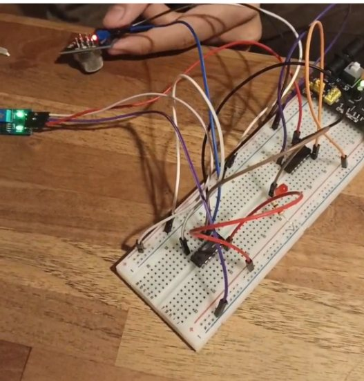
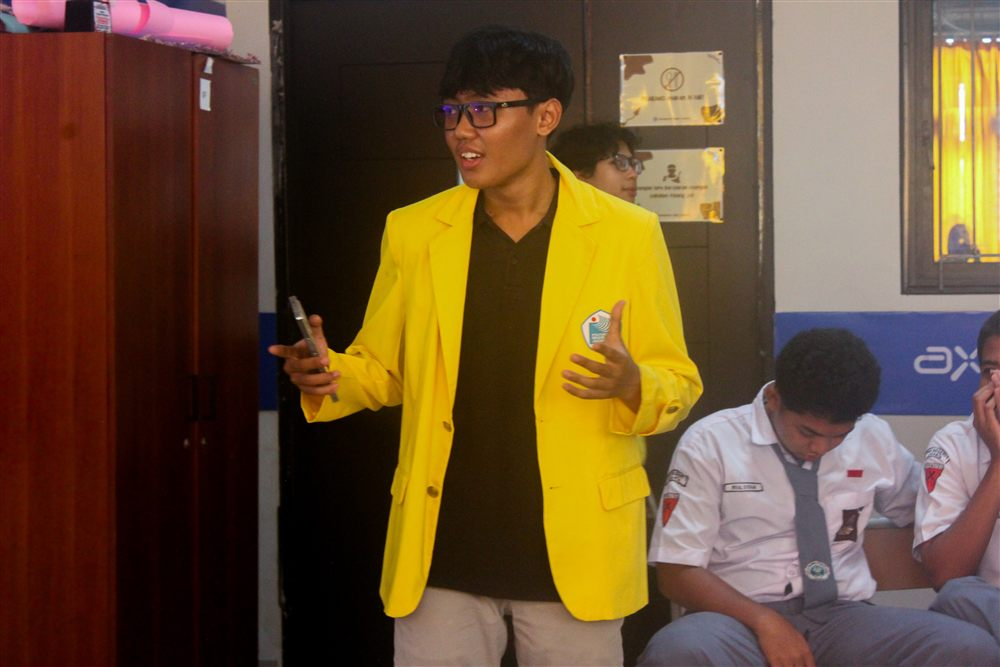
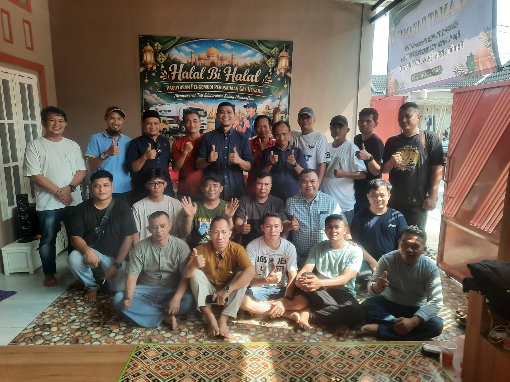

Selamat Datang di Portofolio
Saya!
D4 Multimedia Network Engineer • Cisco CCNA & Mikrotik Certified • Junior Auditor
Narangga Adennas Shaputra
Network Engineering Student | Engineer's Discipline, Auditor's Eye for Detail.
Minat Lintas Disiplin & Problem Solver
Menggabungkan kedisiplinan teknik jaringan dengan ketelitian audit keuangan.
Ringkasan Profil
Mahasiswa D4 Multimedia Network Engineer, Politeknik Negeri Jakarta (semester 3), dengan ketertarikan lintas disiplin: network infrastructure, cybersecurity, multimedia, hingga finance & accounting. Memiliki latar belakang Pendidikan Teknik Komputer & Jaringan (SMKN 1 Kasreman, rata-rata 89).
Saya senang memecahkan masalah kompleks melalui analisa yang sistematis, baik dalam mengonfigurasi topologi jaringan Cisco/Mikrotik maupun dalam memeriksa ketepatan kertas kerja audit keuangan klien perusahaan.
Riwayat Karir & Kontribusi Sosial
Pengalaman profesional teknis, audit, layanan pelanggan, dan pengabdian masyarakat.
Latar Belakang Akademik
Daftar Proyek Portofolio
6 Proyek unggulan meliputi Networking, IoT, Audit Keuangan, Multimedia, dan Edukasi Sosial.
Konfigurasi & Simulasi Jaringan
Merancang & mengkonfigurasi topologi jaringan menggunakan Cisco Packet Tracer dan Mikrotik/RouterOS untuk skala kantor dan area luas.

IoT & HardwareGas Detector - IoT Dasar
Perangkat pendeteksi gas sederhana berbasis IoT menggunakan sensor MQ-2 dan mikrokontroler Arduino.

Edukasi SMKEdukasi Teknologi & Pancasila
Proyek edukasi pengaitan teknologi dengan nilai-nilai Pancasila untuk siswa SMK di Jakarta.
Produksi Video & Motion Graphics
Memproduksi berbagai proyek video kreatif: proses shooting, editing, color grading, hingga motion graphics profesional.
Audit Laporan Keuangan Klien
Audit laporan keuangan perusahaan di KAP Wibisono dan Rekan, pemeriksaan dokumen, dan kertas kerja audit.

Social VolunteerBakti Sosial Renovasi Rumah Ibadah
Program sosial perawatan & renovasi rumah ibadah bersama P3GN Pertamina Gas Negara di berbagai daerah.
Keahlian & Sertifikasi Resmi
Kompetensi teknis jaringan, cybersecurity, multimedia, akuntansi, hingga soft skills.
Networking & Hardware
Cybersecurity & Admin
Multimedia & Editing
Finance & Audit
Hubungi Narangga
Silakan kirimkan pesan, tawaran kolaborasi, atau diskusi proyek melalui formulir ini atau langsung melalui media sosial & nomor kontak resmi saya.